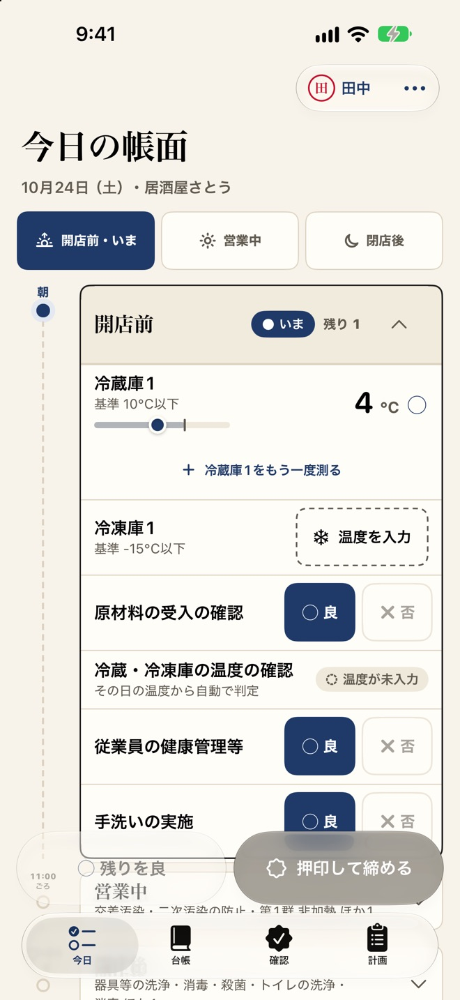
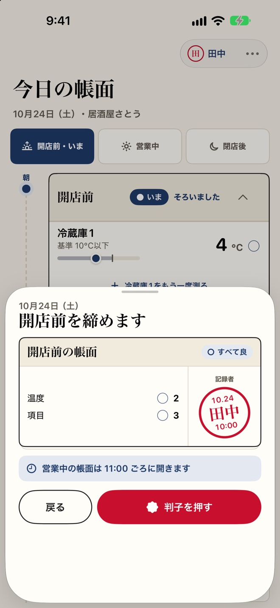
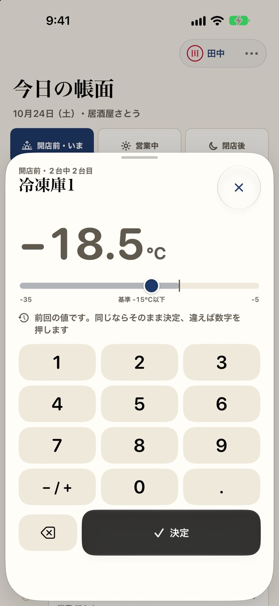
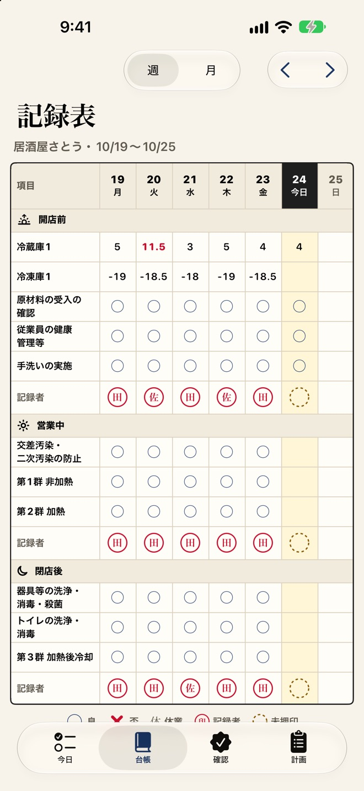
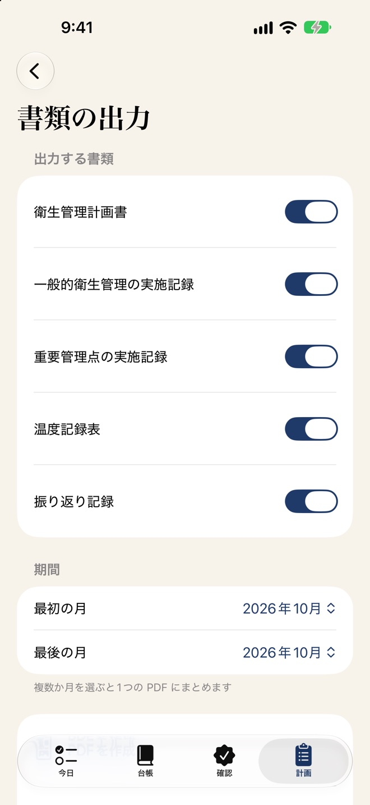
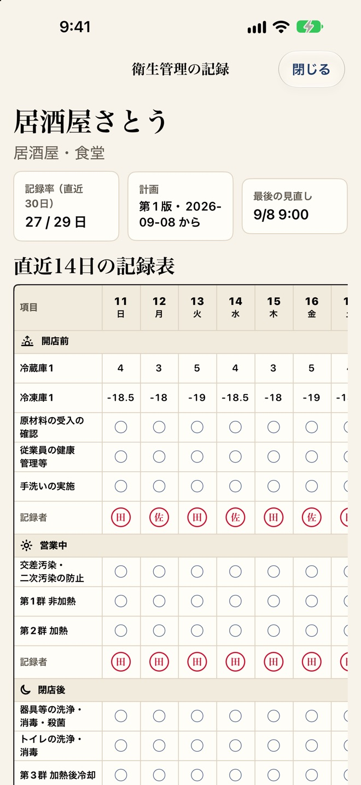
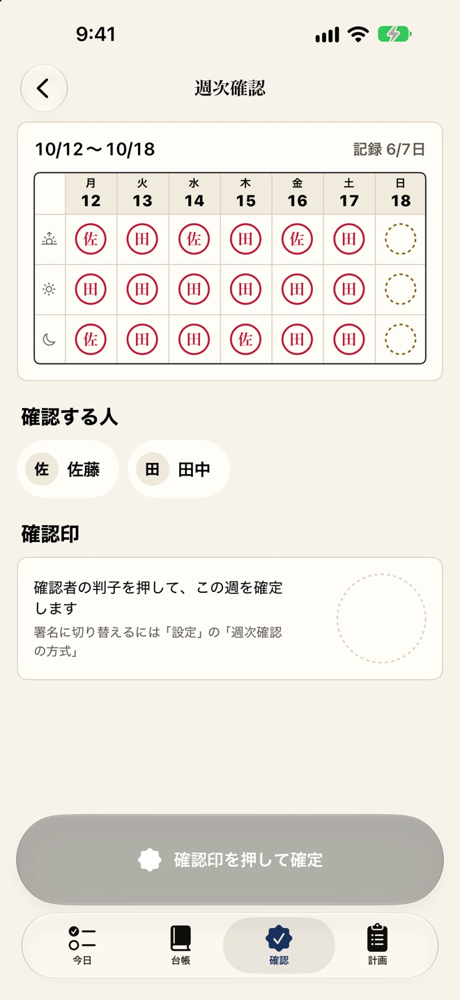
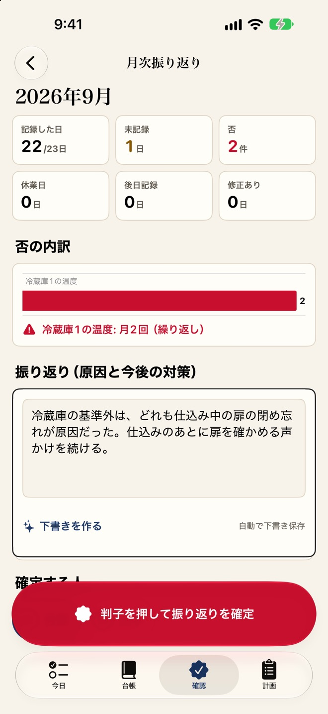

押すのは2つだけ。
「残りを良」と「押印して締める」
点検の項目は業態に合わせて用意されていて、ふだんは「残りを良」を押して判子で締めるだけ。否のときだけ、何があってどうしたかを書きます。よく使う対応は候補から選べます。
- 開店前
- 営業中
- 閉店後
- 押し忘れた帳面は「未押印」と出るので、あとから締められます
- 1人営業のお店は、開店前の1枚だけで記録することもできます

紙の記録表をもらったものの、忙しい日が続いて止まってしまった。保健所の方が来たら、どこにあるか探す。Kiroq（キロク）は、小さな飲食店が HACCP の考え方を取り入れた衛生管理の記録を、毎日30秒ほどで続けるためのアプリです。
App Store で近日公開iPhone・iPad（iOS 26 以上）／アカウント登録は不要です

「残りを良」でまとめて良に。手を止めるのは、問題があったときだけです。
衛生管理計画書と記録表を A4 の PDF に。白黒で印刷しても区別できる印です。
記録はスタッフ、確認は店主。台帳を見て、確認印を押すだけです。
一日を開店前・営業中・閉店後の3枚の帳面に分け、記録した人の判子を押して締めます。紙の記録表と同じ感覚で、毎日の記録が残ります。
点検の項目は業態に合わせて用意されていて、ふだんは「残りを良」を押して判子で締めるだけ。否のときだけ、何があってどうしたかを書きます。よく使う対応は候補から選べます。

冷蔵庫・冷凍庫の温度は、大きなキーパッドで入力します。前回の値を見ながら打てて、基準を外れたらその場で知らせます。

1週間の記録が、項目×日付の表で並びます。区切りごとに、締めた人の判子も残ります。月の画面では、つけ忘れの日・否の日・未確認の週がカレンダーですぐに見つかります。

衛生管理計画書・一般的衛生管理の実施記録・重要管理点の実施記録・温度記録表・振り返り記録を、A4 の PDF にまとめて出力します。CSV（表計算ソフトで開ける形式）でも出せます。

保健所に見せるモードでは、直近14日の記録表、30日の否と対応、週次確認、計画の要約を、編集できない状態で大きく表示します。

店主がすべてを書く必要はありません。週に一度、記録を表で確かめて確認印を押し、月末に振り返ります。
1週間の区切りごとの判子が表で並び、記録漏れがひと目で分かります。確認印か指の署名で確定します。記録した人と確認する人が同じときは、注意を出します。

記録した日・未記録・否の件数と、否の内訳を自動で集計します。同じ項目で否が繰り返したときは目立たせるので、原因と対策を書いて確定するだけです。

店舗を共有すると、招待したスタッフが自分の iPhone で記録できます。スタッフ側の購入は不要です。
管理者・確認者・記録者の役割と、閲覧のみの共有に対応。計画の編集や書類の出力は店主の端末で行います。
スタッフごとに、やさしい日本語・英語・ベトナム語を選べます。PDF などの書類は日本語のままです。
居酒屋・食堂、カフェ・喫茶、ラーメン、弁当・惣菜、パン・菓子と、その他の飲食店。項目はお店に合わせて編集できます。
開店前のリマインドと、閉店後の押し忘れの通知。ホーム画面とロック画面で、今日の帳面の残りが分かります。
日々の記録は削除できません。締めたあとの修正は、修正履歴として自動で残ります。計画を変えても、過去の記録は当時の計画のままです。
記録は端末の中と、お使いのアカウントの iCloud にだけ保存され、同じアカウントの端末と自動で同期します。開発者のサーバーへ送ることはありません。アカウント登録は不要で、広告や解析の仕組みも入っていません。
毎日の記録・台帳・カレンダー・バックアップは、購入しなくても期限なく使えます。書類を出したくなったら本体を、スタッフと分担するならスタッフ共有を。どちらも買い切りです。
お支払いなしで使える範囲
買い切り（1回のお支払い）
買い切り（店主だけの購入）
購入は同じ Apple アカウントのほかの端末でも「購入を復元」で使えます。ファミリー共有に対応しています。
Kiroq は日々の衛生管理の記録を助けるアプリです。HACCP の認証や、法令への対応の完了を保証するものではありません。衛生管理の方法は、業界団体の手引書や、お近くの保健所の指導に沿って決めてください。
業態を選ぶだけで、衛生管理計画ができます。
App Store で近日公開